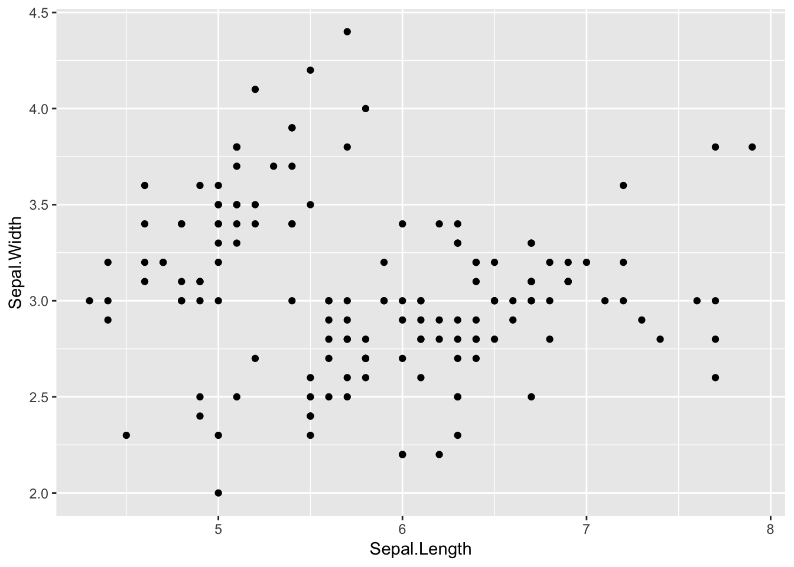
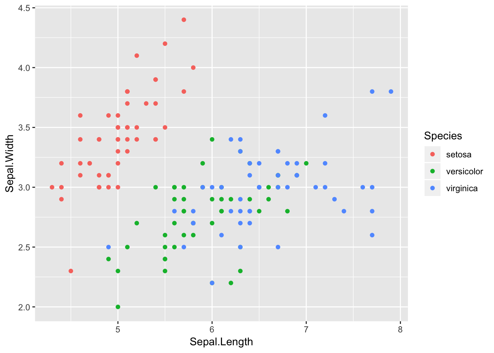
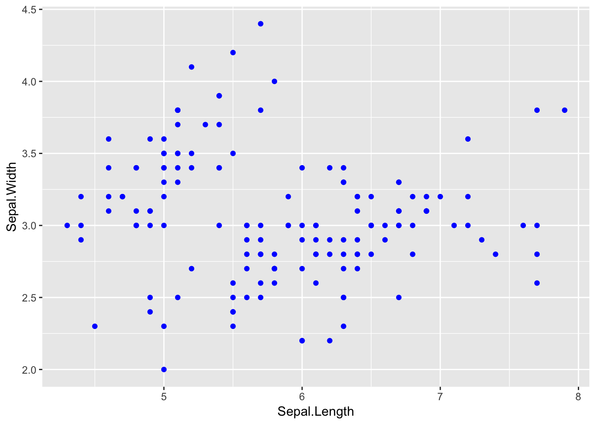
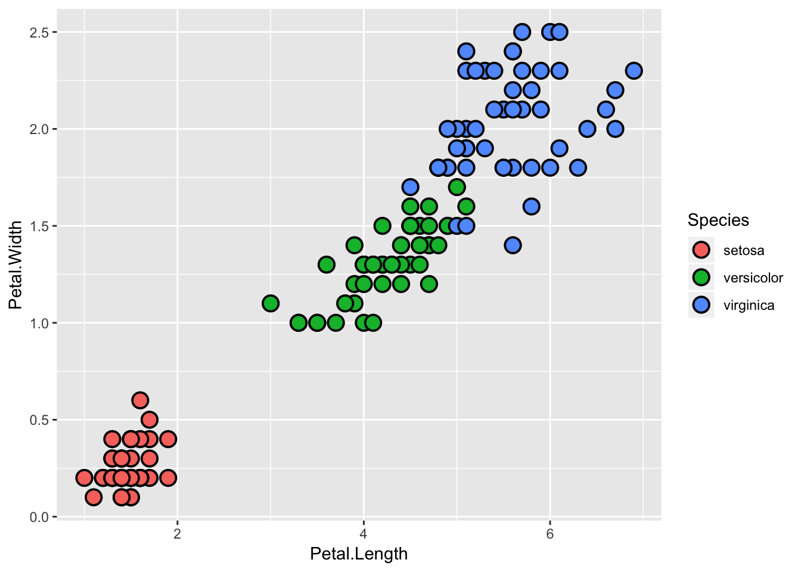
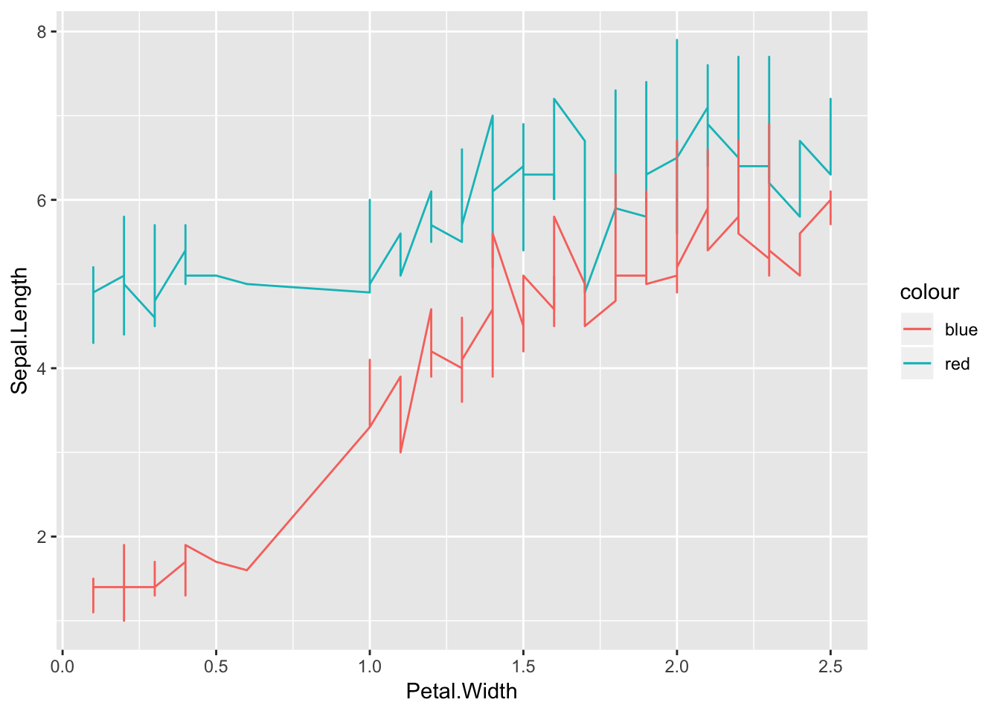
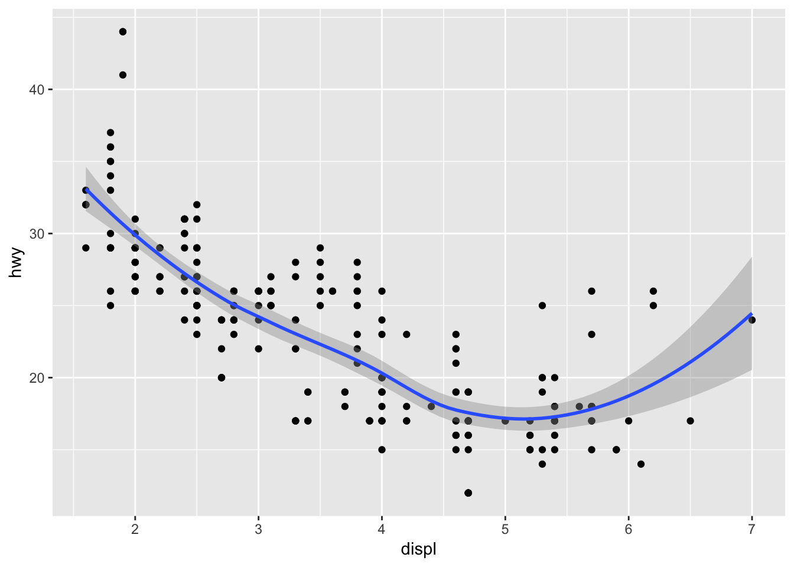
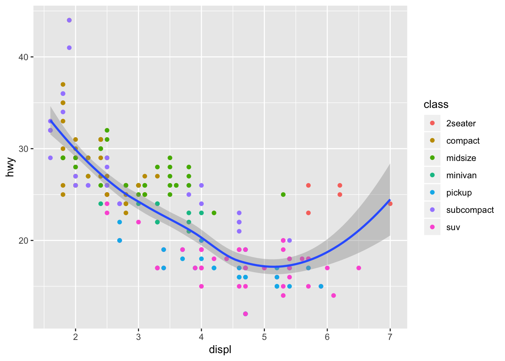
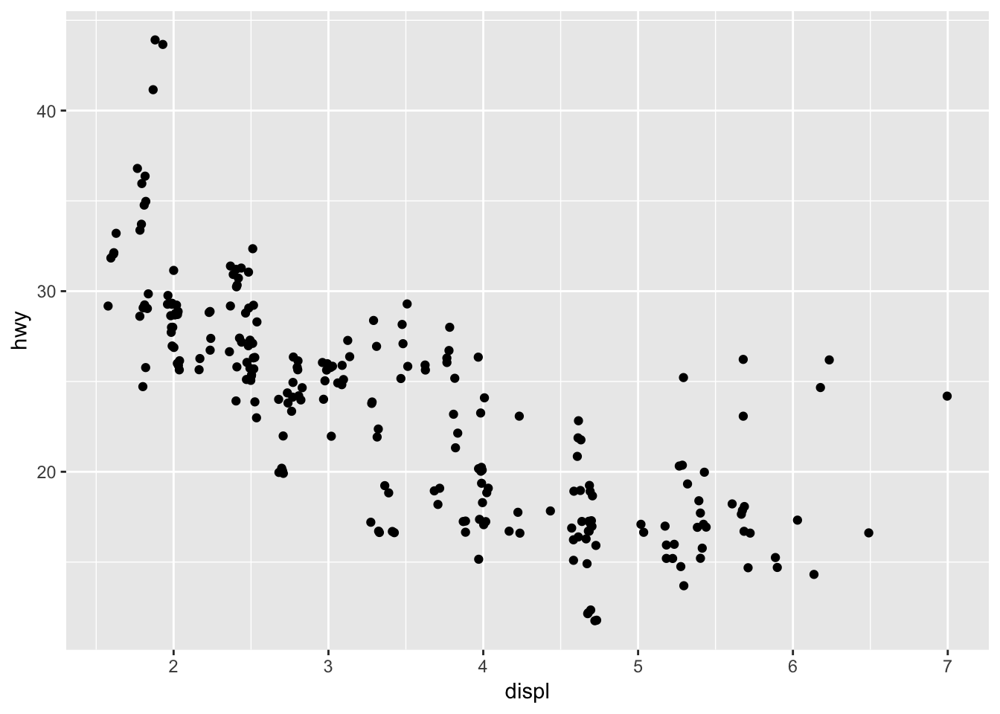
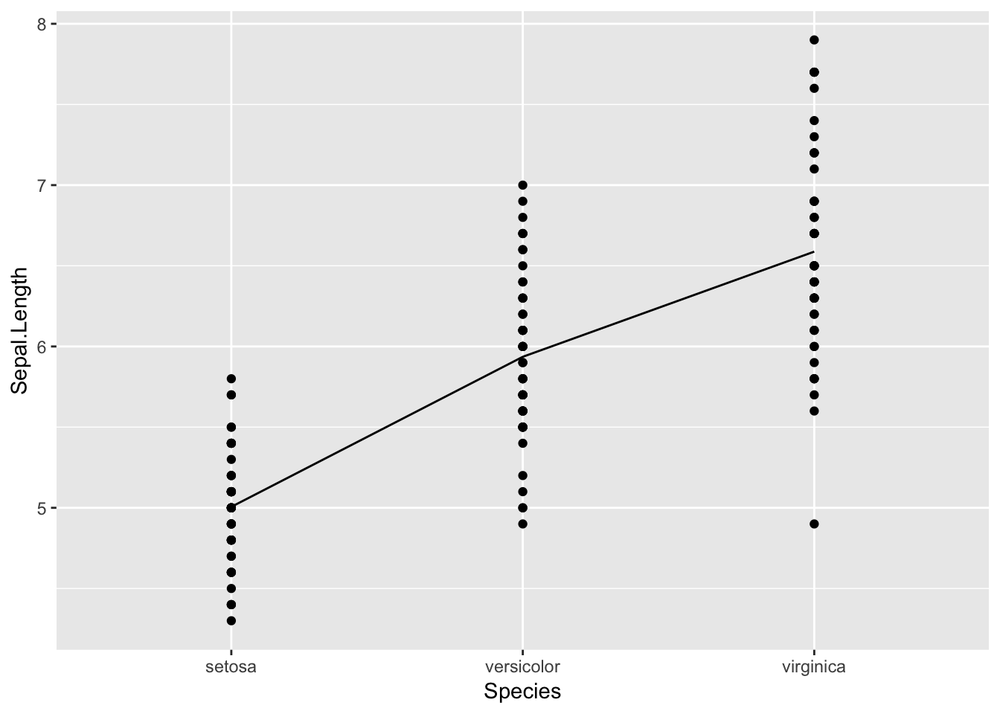

Chapter 10 ggplot2
Useful references:
10.1 Introduction
The general syntax of a ggplot2 call:
ggplot(data = <DATA>) +
<GEOM_FUNCTION>(
mapping = aes(<MAPPINGS>),
stat = <STAT>, #statistical transformation
position = <POSITION>) +
<COORDINATE_FUNCTION> +
<FACET_FUNCTION>There are 7 parameters to specify but you will rarely have to specify all 7 parameters as ggplot has useful defaults.
10.1.1 geoms
Different types of graphs are called different ‘geoms’, as they can be thought of geometrical objects used to represent data. E.g.:
- geom_bar = bar graph
- geom_line = line graph
- geom_boxplot = box plot
- geom_point = scatter plot
- geom_smooth = smooth line fitted to the data
10.1.2 Layering
Think of ggplot2 as creating a plot using layers. Here is a simple scatter plot:
ggplot(data = iris) +
geom_point(mapping = aes(x = Sepal.Length, y = Sepal.Width))
We can break this down into ‘layers’.
This creates an empty graph:
ggplot(data = iris)geom_point() creates a scatter plot on top of the empty base. ‘mapping’ is an argument you beed to define. It maps variable to a way to show it on graph or ‘defines how variables in your dataset are mapped to visual properties’.
Mapping is always paired with aes() and the x and y arguments of aes(), which specify which variable is x and which one is y.
ggplot(data = iris) +
geom_point(mapping = aes(x = Sepal.Length, y = Sepal.Width))10.1.3 Aesthetics
The specific mapping = aes() options vary depending on the type of geom. For geom_point, the following mapping options are available:
- colour - colour of the points.
- size - where each dot will be different sizes depending on the class it belongs to. You can also control the min and max range of point sizes with:
scale_size_continuous/discrete(range = c(2,4))- depending on whether the variable is continuous or discrete. - alpha - transparency of points.
- shape - shape of the points. ggplot2 will only use 6 shapes at a time. By default additional groups will be unplotted.
A different variable can be mapped to each of these aesthetics. ggplot selects a reasonable scale and constructs a legend.
(The dataset mpg will be used in this section)
Here colour is mapped to the variable (column) class.
ggplot(data = iris) +
geom_point(mapping = aes(x = Sepal.Length, y = Sepal.Width,
colour = Species))
You can also set aesthetics to a SINGLE value manually. Do this by mapping aesthetic name outside of the aes() function.
This makes all the points blue:
ggplot(data = iris) +
geom_point(mapping = aes(x = Sepal.Length, y = Sepal.Width),
colour = "blue")
You can also specify these aesthetic appearance mappings:
- size - you can specify size of all points in mm
- shape - specify using a number code. The shapes available are:

- stroke - for shapes that have a border, this dictates the size of the border, in mm.
Here we add a border to all the points:
ggplot(data = iris, mapping = aes(x = Petal.Length, y = Petal.Width,
fill = Species)) +
geom_point(colour = "black", shape = 21, stroke = 1, size = 4)
It is important to note the difference between mapping an aesthetic within aes() and outside of aes() -
- within
aes()you can map a variable (or column) to an aesthetic - outside of
aes()(but inside ageom) you can only map an aesthetic to a constant value
(See SO for more details)
Further, if you do try to provide a colour to a mapping within aes() ggplot2 will interpret it as a variable.
ggplot(iris, aes(x = Petal.Width)) +
geom_line(aes(y = Sepal.Length, colour = "red")) +
geom_line(aes(y = Petal.Length, colour = "blue")) 
The legend labels are "blue" and "red" because ggplot2 has interpreted these to be the labels of each line. ggplot2 also maps the variables "blue" and "red" to the default colour pallete in alphabetical order. Notice how in the legend "blue" occurs first.
If you add legend labels - notice how labels are mapped to your "blue" and "red" NOT according to the order the appear in, in the code, but in alphabetical order ("blue" first). See this question on SO for more.
ggplot(iris, aes(x = Petal.Width)) +
geom_line(aes(y = Sepal.Length, colour = "red")) +
geom_line(aes(y = Petal.Length, colour = "blue")) +
scale_colour_discrete(labels = c("first", "second"))
10.1.4 Syntax
If you put mappings at the top in ggplot(), it will use such mapping for everything, ‘global mapping’.
Here the same y and x mappings are used to create points and a smooth line.
ggplot(data = mpg, mapping = aes(x = displ, y = hwy)) +
geom_point() +
geom_smooth()## `geom_smooth()` using method = 'loess' and formula 'y ~ x'
The above code means the same as:
ggplot(data = mpg) +
geom_point(mapping = aes(x = displ, y = hwy)) +
geom_smooth(mapping = aes(x = displ, y = hwy))You can still change mappings for specific geoms, even if you have specified a ‘global’ mapping in ggplot() call. If you add mappings to geom_xx(), ggplot2 will overwrite or extend the global mappings given in ggplot() with the local mappings given in geom_xx(). Again we can consider geom() as another layer underneath ggplot(), and any changes are for the layer geom(). Here, we add the colour variable to just the geom_point() layer.
ggplot(data = mpg, mapping = aes(x = displ, y = hwy)) +
geom_point(mapping = aes(color = class)) +
geom_smooth()## `geom_smooth()` using method = 'loess' and formula 'y ~ x'
You can also simplify the syntax as data = and mapping = are the first arguments to the ggplot() and geom_xx() functions.
10.1.5 Stat
Stat stands for ‘statistical transform’ and is the algorithm used by a geom to calculate the values used for the graphs. You can find the default stat by looking in the help file of that geom.
You can use stat and geom interchangeably. For example, the default stat for geom_bar() is stat_count().
# this code:
ggplot(iris) +
stat_count(aes(x = Species))
# is the same as:
ggplot(iris) +
geom_bar(aes(x = Species))The help file for geom_bar() will also document what values are computed for this stat. stat_count() computes 2 values: count and prop.
You can override the default stat with the stat argument in geom_xx(). You can also change the default mapping e.g. so that a bar graph of proportion is shown instead of counts.
ggplot(iris) +
geom_bar(aes(x = Species, y = ..prop.., group = 1))Note that proportion is now on the y axis. The argument group = 1 means that it will treat all observations as 100% and calculated the proportion of observations in each group. Without this argument, the proportion will be 100% for each group as it will treat each group separately.
10.2 geom_point
The iris dataset will be used for this section.
10.2.1 Jitter
A problem with scatter plots is that if there are many values that are the same number (especially if they are rounded), the points will overlap each other and it will be diff to appreciate from the graph where the weight of the points lie. To overcome this you can separate the points by adding a bit of random noise to each point. You can do this in two ways:
ggplot(data = mpg) +
geom_point(mapping = aes(x = displ, y = hwy), position = "jitter")
or in a shorter way (as geom_point(position = "jitter") = geom_jitter()):
ggplot(mpg) +
geom_jitter(aes(x = displ, y = hwy))10.2.2 Labels
To label points, use geom_text:
ggplot(iris, aes(y = Petal.Width, x = Petal.Length)) +
geom_point() +
geom_text(aes(label = iris$Species))If you only wanted to label a few specific points, you can use ifelse():
ggplot(iris, aes(y = Petal.Width, x = Petal.Length)) +
geom_point() +
geom_text(aes(label = ifelse(iris$Petal.Length > 6.2,
as.character(iris$Species), "")),
hjust = 0.5, vjust = 1)Note that in the ifelse() statement, you specify the label to be empty "" if the value (row) does not meet your condition.
The arguments hjust and vjust change the position of the label. Note that these are arguments to geom_text() and not aes().
Overlapping labels is a common problem. The package ggrepel ( link ) solves this problem.
library(ggrepel)
ggplot(iris, aes(y = Petal.Width, x = Petal.Length)) +
geom_point() +
geom_text_repel(aes(label = ifelse(iris$Petal.Length > 6.2,
as.character(iris$Species), "")))Note that you no longer use geom_text(). We also put the label argument within geom_text_repel(aes()). You can also the label argument within ggplot, so it is set ‘globally’.
10.2.3 Colour points
If you use the aesthetic fill to colour points using a categorical variable, ggplot2 will set different colours for each category. If you use a continuous variable, ggplot2 will set a gradient scale with appropriate min and max values.
To colour specific points you can use cut() with scale_colour_manual():
ggplot(iris, aes(y = Petal.Width, x = Petal.Length,
colour = cut(iris$Petal.Length, c(0,6,10)))) +
geom_point() +
scale_colour_manual(name = "legend", values = c("red", "black"))The function cut() divides a vector into intervals. You can either specify break points (as I have above - note providing 3 numbers breaks the vector into 2 intervals) or specify the number of intervals you want, in the breaks argument. The result is a factor, where each level is an interval.
The scale_colour_manual() function lets you specify which colours you wish to use. You can also modify the legend by changing the name and the legend labels.
Here we will change the legend labels:
ggplot(iris, aes(y = Petal.Width, x = Petal.Length,
colour = cut(iris$Petal.Length, c(0,6,10)))) +
geom_point() +
scale_colour_manual(name = "legend", values = c("red", "black"),
labels = c("less than 6", "larger than 6"))You can also do this by calling geom_point() twice, specifying only selected points in the second call and setting these points to be a specific colour (see: SO ).
10.2.4 Matrix of plots
Base R comes with the function pairs() which creates a matrix of scatter plots.
pairs(iris[,1:4])The GGally package is an extension to ggplot2 and has a function called ggpairs() which offers extra functionality, like letting you use non-continuous variables in your data frames.
library(GGally)
ggpairs(iris, aes(colour = Species, alpha = 0.4))10.2.5 Adding lines
geom_line() allows you to add a simple line that joins all the points:
ggplot(iris[1:3,], aes(y = Petal.Length, x = Sepal.Length)) +
geom_point() +
geom_line()To change the appearance of the line, geom_line() offers the following arguments:
- colour
- linetype
- size
Setting linetype within geom_line(aes()) allows you have different line types depending on the factor. See R cookbook for more details.
geom_smooth allows you to fit a smooth line through all the points using various methods. The default is ‘auto’ which picks one of:
- lm
- glm
- gam
- loess
depending on the size of the largest group. A message will be output along with the plot informing the user of which method was used.
ggplot(iris, aes(y = Petal.Width, x = Petal.Length)) +
geom_point() +
geom_smooth()## `geom_smooth()` using method = 'loess' and formula 'y ~ x'More details can be found in the ggplot2 reference.
For a plot where x-axis was a categorical/ordinal variable, you can use stat_summary() to draw a line joining the means (or some other function) of each group. stat_summary() operates on unique x and are more flexible versions of stat_bin() - they can compute any aggregate instead of just count.
ggplot(iris, aes(y = Sepal.Length, x = Species)) +
geom_point() +
stat_summary(aes(group = 1),fun.y = mean, geom = "line")
Note that it is important to set the group aesthetic - this tells ggplot if there are groupings within each unique x.
10.2.5.1 Grouping
You may need to specify aes(group()) within geom_line() if you wish to join lines within groups only.
iris %>%
group_by(Species) %>%
summarise(meanSep = mean(Sepal.Length), meanPet = mean(Petal.Length)) %>%
gather(2:3, key = 'type', value = 'mean')## # A tibble: 6 x 3
## Species type mean
## <fct> <chr> <dbl>
## 1 setosa meanSep 5.01
## 2 versicolor meanSep 5.94
## 3 virginica meanSep 6.59
## 4 setosa meanPet 1.46
## 5 versicolor meanPet 4.26
## 6 virginica meanPet 5.55This will give a warning:
iris %>%
group_by(Species) %>%
summarise(meanSep = mean(Sepal.Length), meanPet = mean(Petal.Length)) %>%
gather(2:3, key = 'type', value = 'mean') %>%
ggplot(aes(y = mean, x = Species, colour = type)) +
geom_point() +
geom_line()## geom_path: Each group consists of only one observation. Do you need to
## adjust the group aesthetic?Default grouping occurs in two ways:
- If
xoryare categorical variables, this will become the default group - If
colour,shapeorfillis used, data will be grouped according to the variable mapped to.
In the above case, x was set to Species and colour to type - thus there is only one observation per group, as per the warning message.
There are a few ways to avoid default grouping:
- do not use map in
ggplot(aes())as this will be applied to all layers - override the default grouping with the
groupparameter
Here we have overriden the default grouping in the geom_line() geom:
iris %>%
group_by(Species) %>%
summarise(meanSep = mean(Sepal.Length), meanPet = mean(Petal.Length)) %>%
gather(2:3, key = 'type', value = 'mean') %>%
ggplot(aes(y = mean, x = Species, colour = type)) +
geom_point() +
geom_line(aes(group = type))
You can also remove all grouping by setting group to be a constant - any one value, e.g. 1, or 123, or ‘aa’. This makes the geom treat all the data as one group and draw one line through all the data points. Note also that you can do this within aes() or outside of aes() as it is a constant (see section 10.1.3).
iris %>%
group_by(Species) %>%
summarise(meanSep = mean(Sepal.Length), meanPet = mean(Petal.Length)) %>%
gather(2:3, key = 'type', value = 'mean') %>%
ggplot(aes(y = mean, x = Species, colour = type)) +
geom_point() +
geom_line(group = 1)Finally, note that grouping is for collective geoms. Collective geoms are geoms which ‘use’ more than one row of data. In geom_point(), each point is one row of data, thus it is NOT a collective geom. In geom_boxplo(), each box uses data from many rows, thus it is a collective geom. Grouping is important for collective geoms but NOT for individual geoms.
(See link for more details)
10.3 Bar graphs & histograms
The default stat of geom_bar() is ‘count’, which ‘bins’ your data (puts each value into a defined ‘bin’), and then plots bin counts.
ggplot(iris, aes(x = Species)) +
geom_bar()This tells you that there are 50 values (observations/rows) in each species group.
geom_histogram() is appropriate for a continuous variable:
ggplot(iris, aes(x = Petal.Length)) +
geom_histogram()## `stat_bin()` using `bins = 30`. Pick better value with `binwidth`.A message will be output with the plot telling the user which bin width has been used. To pick a binwidth, use the binwidth argument in geom_histogram() (outside of aes()).
A number of histograms can be overlayed on top of each other, though Hadley recommends that you do this with geom_freqpoly():
ggplot(iris, aes(x = Sepal.Width, colour = Species)) +
geom_freqpoly()## `stat_bin()` using `bins = 30`. Pick better value with `binwidth`.To plot a bar graph using absolute values (instead of frequencies), use stat = 'identity' (see 888 chapter for dplyr notation):
iris %>%
group_by(Species) %>%
summarise(mean = mean(Sepal.Length)) %>%
ggplot(aes(y = mean, x = Species)) +
geom_bar(stat = 'identity')Adding fill argument in aes() will create a stacked bar graph:
ggplot(iris, aes(x = Sepal.Length, fill = Species)) +
geom_bar()Note: fill species the colour of the bar (or point) and colour spefies the colour of the border around the bar (or point).
To have the bars next to each other instead of stacked, use position = 'dodge':
ggplot(iris, aes(x = Sepal.Length, fill = Species)) +
geom_bar(position = 'dodge')Note in the graph above, for lengths where not all species are present, there is only 1 bar that is wider. To fix this - google it…
10.4 geom_boxplot
Definitions: * A box that stretches from the 25th percentile of the distribution to the 75th percentile * A line (or whisker) that extends from each end of the box and goes to the farthest non-outlier point in the distribution. * Points (dots) that display observations that fall more than 1.5 times the IQR from either edge of the box. These outlying points are unusual so are plotted individually.
10.5 Facets
(Back to the mpg dataset)
Another way to add variables is to split into many graphs:
ggplot(mpg) +
geom_point(aes(x = displ, y = hwy)) +
facet_wrap(. ~ class, nrow = 2) # same plot with or without dotThe first argument is a ‘formula’, which you create with ~ followed by variable name. Variable should not be a continuous variable. In the above plot, leaving one side empty or using a dot means that only one variable is being facetted. The nrow and ncol arguments let you specify how many rows or columns you want.
If you wish to facet using two variables, facet_wrap will look like this:
ggplot(mpg) +
geom_point(aes(x = displ, y = hwy)) +
facet_wrap(drv ~ class, nrow = 2) # same plot with or without dotGraphs for all possible combinations of your two variables are created and arranged as per the nrow and ncol specification - as described by the help file: ‘Wrap a 1d ribbon of panels into 2d’. Note that only combinations where there values are shown.
Alternatively you can use facet_grid():
ggplot(mpg) +
geom_point(aes(x = displ, y = hwy)) +
facet_grid(drv ~ cyl)Here the notation is (row ~ column) - LHS is which variable should be horizontally facetted and RHS is which variable should be vertically facetted.
Note that in this case graphs for all possible combinations of the two variables are created, even though some combinations have no values (e.g. the botton left graphs have no points in them).
10.6 Reordering factors
Often a specific order of factor levels is desired when plotting. This can be achieved using the base R function reorder().
head(
reorder(mpg$manufacturer, mpg$displ, FUN = max),
n=20
)## [1] audi audi audi audi audi audi audi
## [8] audi audi audi audi audi audi audi
## [15] audi audi audi audi chevrolet chevrolet
## 15 Levels: honda subaru hyundai volkswagen audi land rover ... chevroletIn the above code we have reordered the levels of mpg$manufacturer according to the maximum mpg$displ (engine displacement in litres) value of each factor group. See the reorder help file for more details.
ggplot(mpg) +
geom_boxplot(aes(x = reorder(class, hwy, FUN = median), y = hwy))In the above graph, we have reordered the levels of mpg$class according to their median hwy levels. You acn see in the boxplot, that the median hwy levels increase from left to right.
10.7 Coordinate systems
Default is Cartesian.
coord_flip() switches axis of the graph - rotatwa graph by 90 deg. Good for graphs with long names on the x-axis. coord_cartesian(ylim = c(min,max), xlim = c(min,max)) lets you ‘zoom’ in on a particular part of the graph.
10.8 Reference lines
Reference lines can be added to graphs using:
geom_abline- diagonal specified by slope and intercept (vertical and horizontal lines can also be drawn)geom_hline- horizontal linegeom_vline- vertical line
See ggplot reference for examples.
10.9 Error bars
To add error bars, you must specify the length of each error bar. For example, if you wished to have +/- standard deviation error bars on a bar graph, you need to have a column in your dataframe with the standard deviation for each bar.
If we wanted to plot the mean +/- sd of the Sepal.Length we would need a dataframe with these columns:
iris %>%
group_by(Species) %>%
summarise(mean = mean(Sepal.Length), sd = sd(Sepal.Length)) ## # A tibble: 3 x 3
## Species mean sd
## <fct> <dbl> <dbl>
## 1 setosa 5.01 0.352
## 2 versicolor 5.94 0.516
## 3 virginica 6.59 0.636To add the error bars, use geom_errorbar():
iris %>%
group_by(Species) %>%
summarise(mean = mean(Sepal.Length), sd = sd(Sepal.Length)) %>%
ggplot(aes(y = mean, x = Species)) +
geom_bar(stat = 'identity') +
geom_errorbar(aes(ymin = mean - sd, ymax = mean + sd))To change the appearance of the error bar, there are many options:
iris %>%
group_by(Species) %>%
summarise(mean = mean(Sepal.Length), sd = sd(Sepal.Length)) %>%
ggplot(aes(y = mean, x = Species)) +
geom_bar(stat = 'identity') +
geom_errorbar(aes(ymin = mean - sd, ymax = mean + sd),
size = 0.3, # thinner lines
width = 0.2, # how much of the bar the error bar should span
position = position_dodge(0.9)
)position_dodge() preserves the vertical position of an geom while adjusting the horizontal position. (see ggplot ref for more details)
For more examples see R cookbook.
10.10 Appearance
- Change axis name and title:
labs(title = "MAIN TITLE", x = "X-AXIS TITLE", y = "Y-AXIS TITLE"). - Change position of title:
theme(plot.title = element_text(hjust = 0.5)). - Set which categories appear in barplot/boxplot:
xlim("Category1","Category2"). - Change colour of
fillboxplot/bars:scale_fill_manual(values = c("Colour1", "Colour2"), name = "title of Legend", labels = c("Label1","Label2")). - Change names under each bar/boxplot:
scale_x_discrete(labels = c("bar1", "bar2", "bar3", "bar4")). - Change title text style:
theme(title = element_text(face = "bold.italic", color = "blue", size = 16)). - Change axis name text style:
theme(axis.title = element_text(face = "bold.italic", color = "red", size = 16)). - Legend title/labels:
scale_fill_discrete(name = "Legend name", labels = c()). - Angle of labels:
theme(axis.text.x = element_text(angle = 90, hjust = 1)).
10.10.1 Scales
Scale functions are quite confusing. A few notes:
- The functions
scale_colour_discrete()andscale_fill_discrete()are actually both wrappers around the functiondiscrete_scale()but with useful defaults.
scale_colour_discrete## function (..., h = c(0, 360) + 15, c = 100, l = 65, h.start = 0,
## direction = 1, na.value = "grey50", aesthetics = "colour")
## {
## discrete_scale(aesthetics, "hue", hue_pal(h, c, l, h.start,
## direction), na.value = na.value, ...)
## }
## <bytecode: 0x108e33290>
## <environment: namespace:ggplot2>* You can set the legend title and labels quite easily but the colours with difficulty. You need to use the `palette` argument which takes the name of a function that when called and given an integer, 'x', will give you 'x' colours in hex. The function `colorRampPalette()` takes in a vector of colours (usually two or three, in hex format) and will produce a function that when given an integer, will return a character vector of that length, of colours that interpolate the colours given to the original function. E.g. # this creates a function. The two colours given is what will be interpolated.
palette_fun <- colorRampPalette(c("#000000","#800000"))
palette_fun(10)## [1] "#000000" "#0E0000" "#1C0000" "#2A0000" "#380000" "#470000" "#550000"
## [8] "#630000" "#710000" "#800000"The output is ten colours, which range from the first colour “#000000”, to second colour “#800000”.
scale_xx_manual()are more flexible functions which allow you to change the legend title and labels as well as the colours.
Fonts: cookbook
10.11 dplyr & ggplot2
To make a plot for each group_by(), use do(). See 888 for more details.
iris %>%
group_by(Species) %>%
do(plots=ggplot(data=.) +
aes(x=Petal.Width, y=Petal.Length) +
geom_point() +
ggtitle(unique(.$Species))
)## Source: local data frame [3 x 2]
## Groups: <by row>
##
## # A tibble: 3 x 2
## Species plots
## * <fct> <list>
## 1 setosa <S3: gg>
## 2 versicolor <S3: gg>
## 3 virginica <S3: gg>The output of this is a dataframe where the first column gives the names of the groups (from the group_by()) and the second column is called ‘plots’ (as we specified) and each item is a plot (gg object).
To give the plot a title - the name of the group - you can either use:
unique(.$Species)- there will only be 1 species type aftergroup_by()..$Species[1]- this is the first row of the Species column aftergroup_by().
10.12 Saving graphs
Using pdf() or png():
pdf('name of thing.pdf')
# Generate your plot
dev.off() # this closes off the current graphic deviceggsave() saves the last plot that you generated. You can specify width, height and units - options are c('in', 'cm', 'mm').